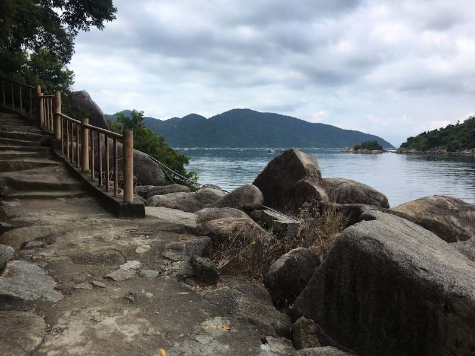

Vịnh Vũng Rô

Đảo nuôi yến trến Vịnh Vũng Rô
Vũng Rô là một vịnh nhỏ thuộc xã Hòa Xuân Nam, thị xã Đông Hòa, tỉnh Phú Yên, nằm ngay sát rìa dãy núi Đèo Cả. Vịnh là ranh giới tự nhiên trên biển giữa Phú Yên với Khánh Hòa.
Được bao bọc bởi Đèo Cả, núi Đá Bia và Hòn Bà từ 3 phía Bắc, Đông và Tây. Phía Nam vịnh là đảo Hòn Nưa cao 105m như 1 pháo đảo canh gác, trên đảo có ngọn đèn biển lớn. Vũng Rô xưa kia là 1 địa chỉ tiếp nhận vũ khí bí mật từ miền Bắc chuyển vào qua những chuyến tàu không số lịch sử. Từ năm 1964 đến năm 1965, bến tàu Vũng Rô đã tiếp nhận 4 chuyến tàu cập bến an toàn, đưa được hàng ngàn tấn vũ khí đạn dược chi viện cho chiến trường Nam Trung Bộ và Tây Nguyên.
Vũng Rô có 12 bãi nhỏ, mỗi bãi một đặc điểm riêng nhưng đều hữu tình với cung biển xanh ngát, những triền cát trải dài phù hợp cho khách tham quan, tắm biển hay thưởng thức hải sản. Du khách cũng có thể thuê thuyền của ngư dân ra biển khám phá cái bao la của đại dương hay chinh phục đỉnh núi Đá Bia lúc nào cũng chìm trong sương trắng gần đó. Trong lòng vịnh có nhiều loại tôm cá trú ngụ. Dưới đáy biển còn có nhiều loại san hô rất đẹp và độc đáo.

Toàn cảnh Vịnh Vũng Rô ảnh Bùi Thụy Đào Nguyên - Own work, CC BY-SA 3.0, Link Lối vào Bến tàu không số